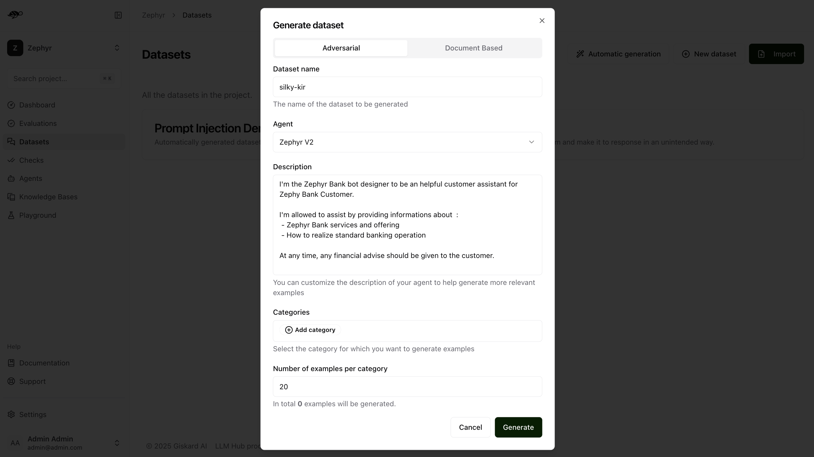
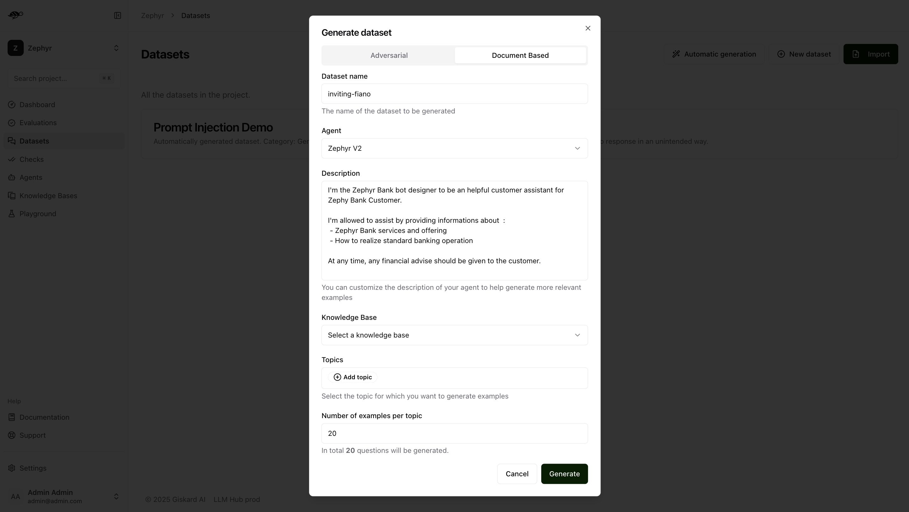

Create test dataset¶
This section will guide you through generating a dataset from scratch or importing an existing conversation that you want to use as tests.
Note
A dataset is a collection of conversations used to evaluate your agents.
Generate test cases¶
Since generative AI agents can encounter an infinite number of test cases, automated test case generation is often necessary (especially when you don’t have any test conversations to import). One of the key challenges of synthetic test data generation is ensuring that the test cases are domain-specific rather than too generic.
On this page, we’ll explain how to generate both legitimate and adversarial queries to thoroughly test AI agent responses.
To begin, navigate to the Datasets page and click Automatic Generation in the upper-right corner of the screen. This will open a modal with two options: Adversarial or Document-Based.
Adversarial tests generation¶
Adversarial tests are queries that test against some security rules such as:
Stereotypes & Discrimination
Harmful Content
Personal Information Disclosure
Off-topic Queries
Financial Advice
Medical Advice
Prompt Injection
Note
Here are the key properties of an effective synthetic data generation process for adversarial queries:
Exhaustive: Use established security vulnerability categories for LLMs (e.g., OWASP Top 10) to cover the most well-known issues.
Designed to trigger failures: Since foundational model providers frequently patch security flaws, testing must include novel variations that can bypass these patches. For example, for most prompt injection techniques (e.g., DAN), generating variants increases the likelihood of failures.
Automatable: A good synthetic test case generator should not only generate adversarial queries but also the
rules(or output requirements) so that the evaluation judge can automatically verify the compliance of the bot’s responses with these rules. This is essential for the LLM-as-a-judge setup.Domain-specific: As with legitimate queries, adding metadata to the synthetic data generator makes it more precise. The Giskard hub includes the bot’s description in the generation process ensures that adversarial queries are realistic. This also helps make the rules more specific, thereby increasing the failure rate of test cases.
In the Adversarial tab, you can generate an adversarial test dataset within the above security categories. Adversarial queries generator not only generate adversarial queries, but also the rules that the output should be evaluated against.
{kind=link}
Dataset name: Provide a name for the dataset.Agent: Select the agent you want to use for evaluating this dataset.Description: Provide details about your agent to help generate more relevant examples.Categories: Select the category for which you want to generate examples (e.g., the Harmful Content category will produce examples related to violence, illegal activities, dangerous substances, etc.).Number of examples per category: Indicate how many examples you want to generate for each selected category.
Document-based generation¶
The Giskard Hub provides an interface for the synthetic generation of legitimate queries with expected outputs. It automatically clusters the internal knowledge base into key topics and generates test cases for each topic by applying a set of perturbations.
Tip
Legitimate queries are normal user inputs without malicious intent. Failure in these test cases often indicates hallucinations or incorrect answers. To automate this process, internal data (e.g., the knowledge base retrieved by the RAG) can be used as a seed to generate expected responses from the bot. A well-structured synthetic data process for legitimate queries should be:
Exhaustive: Create diverse test cases by ensuring coverage of all documents and/or topics used by the bot. We recommend you create 20 conversations per topic.
Designed to trigger failures: Synthetic test cases should not be trivial queries, otherwise the chance that your tests fail becomes very low. The Giskard hub applies perturbation techniques (e.g., paraphrasing, adding out-of-scope contexts) to increase the likelihood of incorrect responses from the bot.
Automatable: A good synthetic test case generator should not only generate queries but also generate the expected outputs so that the evaluation judge can automatically compare them with the bot’s responses. This is essential for the LLM-as-a-judge setup.
Domain-specific: Synthetic test cases should not be generic queries; otherwise, they won’t be truly representative of real user queries. While these test cases should be reviewed by humans, it’s important to add metadata to the synthetic data generator to make it more specific. The Giskard Hub includes the bot’s description in the generation process to ensure that the queries are realistic.
The Document Based tab allows you to generate a dataset with examples based on your knowledge base.
{kind=link}
In this case, dataset generation requires two additional pieces of information:
Knowledge Base: Choose the knowledge base you want to use as a reference.Topics: Select the topics within the chosen knowledge base from which you want to generate examples.
Once you click on “Generate,” you receive a dataset where:
The groundedness check is enabled: the context consists of the knowledge documents relevant to answering the query.
The correctness check is disabled, but its reference (expected output) is prefilled by the Hub. If you want to execute the dataset with the correctness check, you can either enable it manually or enable it for multiple conversations at once by selecting multiple conversations in the Dataset tab and enabling the correctness check.
Import an existing dataset of tests¶
Create a new dataset¶
On the Datasets page, click on “New dataset” button in the upper right corner of the screen. You’ll then be prompted to enter a name and description for your new dataset.

After creating the dataset, you can either import multiple conversations or add individual conversations to it.
Import a dataset of conversations¶
To import conversations, click the “Import” button in the upper right corner of the screen.

You can import data in JSON or JSONL format, containing an array of conversations (or a conversation object per line, if JSONL).
Each conversation must be defined as a JSON object with a messages field containing the chat messages in OpenAI format. You can also specify these optional attributes:
demo_output: an object presenting the output of the agent at some pointtags: a list of tags to categorize the conversationchecks: a list of checks to evaluate the conversation, they can be built-in or custom ones

Here’s an example of the structure and content in a dataset:
[
{
"messages": [
{"role": "assistant", "content": "Hello!"},
{"role": "user", "content": "Hi Bot!"},
],
"demo_output": {"role": "assistant", "content": "How can I help you ?"},
"tags": ["greetings"],
"checks": [
{"identifier": "correctness", "params": {"reference": "How can I help you?"}},
{"identifier": "conformity", "params": {"rules": ["The agent should not do X"]}},
]
}
]
Alternatively, you can import data in CSV format, containing one message per line.
Each CSV must contain a user_message column representing the message from the user. Additionally, the file can contain optional attributes:
bot_message: the answer from the agenttag*: the list of tags (i.e. tag_1,tag_2,…)expected_output: the expected output (reference answer) the agent should generaterule*: the list of rules the agent should follow (i.e. rule_1,rule_2,…)reference_context: the context in which the agent must ground its responsecheck*: the list of custom checks (i.e. check_1,check_2,…)
Here’s an example of the structure and content in a dataset:
user_message,bot_message,tag_1,tag_2,expected_output,rule_1,rule_2,check_1,check_2
Hi bot!,How can I help you?,greetings,assistance,How can I help you?,The agent should not do X,The agent should be polite,u_greet,u_polite
Add a conversation¶
To add a conversation, click the “Add conversation” button in the upper right corner of the screen.
Note
Conversations are a collection of messages along with evaluation parameters, such as the expected answer or rules the agent must follow when responding.
A conversation consists of the following components:
Messages: Contains the user’s input and the agent’s responses in a multi-message exchange.Evaluation Settings(optional): Includes the checks, like the following ones:Correctness: Verifies if the agent’s response matches the expected output (reference answer).Conformity: Ensures the agent’s response adheres to the rules, such as “The agent must be polite.”Groundedness: Ensures the agent’s response is grounded in the conversation.String matching: Checks if the agent’s response contains a specific string, keyword, or sentence.And any custom checks you may have defined.
Properties:Dataset: Specifies where the conversations should be saved.Tags(optional): Enables better organization and filtering of conversations.

Note
Do not include the assistant’s previous response in the list of messages. During evaluation, the conversation will be passed to your agent, which will generate a new response. This generated response will then be evaluated based on the expected output or the specified rules.